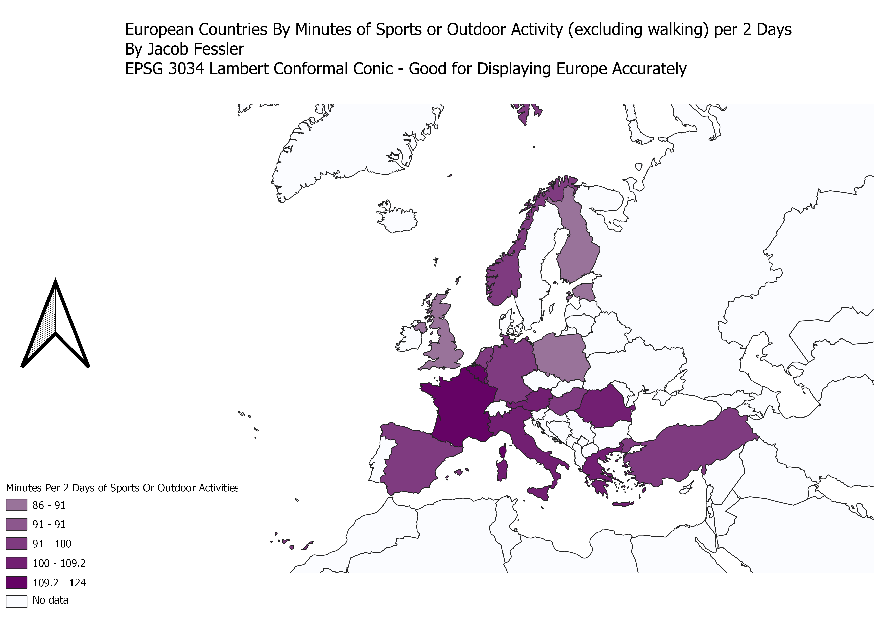

I used data from EUROSTAT to make a choropleth that displays the amounts of minutes spent by people in European countries playing Sports or doing outdoor exercise that is not walking every 2 days. My motivation for choosing this data is because I was curious about levels of physical activity around the world, and after looking into available datasets, I found this data, which allows us to compare time spent exercising per country.
 Data Source Vector Layer CSV